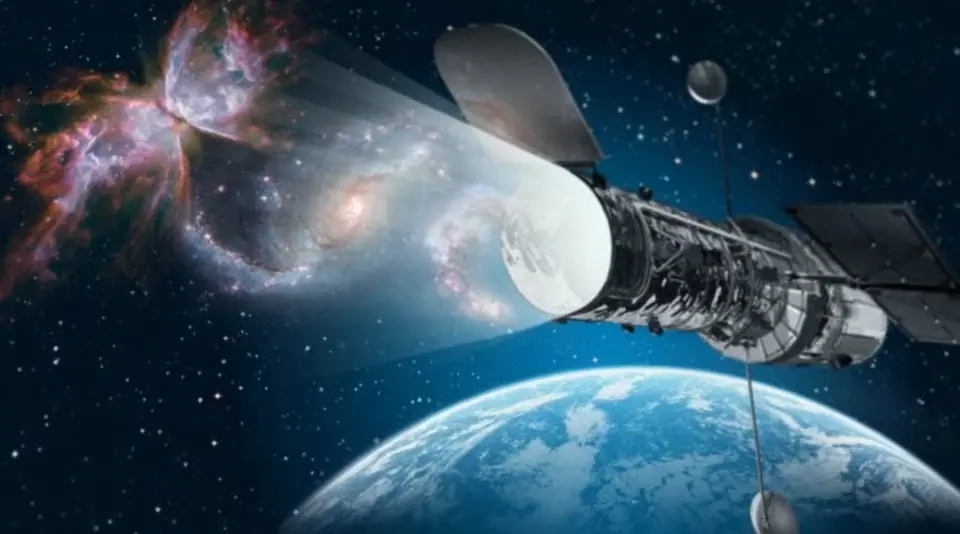

Science news ·
The Hubble Space Telescope: one of humanity's greatest achievements
Translated from the Arabic original. اقرأ النص الأصلي بالعربية
Prepared by Hani Al-Dhulaie

The Hubble Space Telescope was launched into its orbit around the Earth on 24 April 1990 and is still working there in its orbit, about 600 kilometres above the Earth.
Twenty-nine years in space… By God, had it been a factory on Earth it would have demanded a great deal of care and spare parts, and perhaps a lot of workers and operators, and had it been a human it would have visited the doctor more than twenty times, at the very least once every year. For it to stay in space without modifications, upgrades, additions or an oil change means that it is one of the wonders of technology in our world.
It is the Hubble Space Telescope, launched into its orbit around the Earth on 24 April 1990 and still working there in its orbit about 600 kilometres above the Earth, completing one revolution around it about every hundred minutes. Up to today it has circled it more than 150,000 times, at a rate of 14–15 times a day.
Although it has suffered friction with the remnants of the atmosphere, which affects its speed and orbit, it has stood firm to this day. If you would like to salute it, watch it with the naked eye as it passes brightly across your sky shortly after sunset (pass times can be found on specialised websites on the Internet).
Humanity's most important invention
The Hubble Space Telescope remains the greatest thing humanity has sent into space, because it has revealed to us astonishing truths about the hidden corners of the universe that could never have been achieved by Earth's telescopes, simply because it lives outside the Earth's atmosphere and is unaffected by the alternation of night and day: its sky is dark around the clock. So the million-plus pictures it has taken of the universe have revealed facts that exceeded by hundreds of times what scientists knew about the universe from the dawn of civilisation until before Hubble's launch.
In fact what distinguishes Hubble is that it has a very large eye: a polished concave mirror 2.4 metres across, able to gather faint light from galaxies billions of light years away. Indeed the record Hubble set in this field was for a galaxy at the edge of the visible universe that formed shortly after the Big Bang: the cameras of the Hubble Space Telescope saw the galaxy GN-z11, 13.39 billion light years away from us.
And if you do not know, dear reader, what a light year means, you must imagine it, with great difficulty. It is a distance, and I repeat here that it is a distance, that light travelling at its speed of 300,000 kilometres per second covers in one whole year, amounting to 9.46 thousand billion kilometres.
There is no star within a light year of the Sun; the nearest is Rigil Kentaurus (Alpha Centauri), 4.3 light years away from us, at 40 thousand billion kilometres. So how would you fare if asked to imagine those remote depths where galaxies stand at the very edge of the primordial universe that emitted its first lights when it began 13.8 billion years ago?!
Edwin Hubble
Hubble is the name of the American astronomer Edwin Hubble, who worked on observing the motion of galaxies at Mount Wilson Observatory in California, and discovered for us in 1929 that the universe is expanding and that galaxies are receding from us. He is the author of Hubble's law, which relates the speed of recession of galaxies to their distances, and the cosmic Hubble constant (a number added to Hubble's law relating speed to distance) became known by his name.
When the Hubble telescope sent its first cosmic picture in 1994, it was a picture containing more than 4,000 galaxies in its frame, and it took the telescope forty days to store the picture's data, at ten hours of imaging each day. And not only that: imagine, dear reader, that you hold your mobile phone camera while riding in a taxi and want to take a picture of a tree by the roadside. How hard the task would be, especially if the car were speeding! I can almost swear that the picture would be somewhat shaky, unlike what Hubble did in space while travelling at nearly eight kilometres per second, equivalent to 30,000 kilometres per hour, in continuous circular motion, and yet its camera did not shake and it did not get a blurred picture! Is this not one of the wonders of science and technology?! More amazing still, it has remained able to deliver for all that time, and if that indicates anything it indicates the level of creativity and dedication of its makers.
Hubble's successor… James Webb
The Hubble telescope lived its first ten years while scientists expected that it would not complete them, but it did, and completed fifteen years and then twenty. The mission was nearly ended, were it not that those in charge of it found it was still able to deliver.
Even so, they began preparing a powerful successor to it that outperforms it a hundredfold: the James Webb Space Telescope, with a mirror 6.5 metres in diameter. It was supposed to be launched at the end of 2018, but they postponed it to 2020 for technical reasons.
James Webb is a telescope that does not see in visible light like Hubble, but in infrared light, which will let it surpass Hubble in its ability to distinguish distant and very distant bodies.
Because Hubble orbits the Earth in a relatively near orbit, astronauts were able to visit it in 1993 to make some repairs to its primary mirror. The James Webb telescope, however, will orbit in a place no one can reach after it leaves the Earth: Hubble's successor will be placed 1.5 million kilometres from the Earth in an orbit known as a Lagrange orbit, where the satellite or telescope holds its position and completes one revolution around the Sun once every year, just as the Earth does, so it faces the sky without a Sun.
Unprecedented discoveries
Hubble's first achievements came after its repair in 1994 when the 21 fragments of Comet Shoemaker–Levy struck the planet Jupiter. Scientists expected them to leave marks as spots in its atmosphere, and Hubble's picture was a great victory for astronomers as it matched the calculations.
Then came the first picture of a galaxy cluster, which captivated minds and whose news spread around the world like wildfire. Then wonderful pictures of the universe followed one after another, numbering more than thirty thousand, astonishing in their detail, especially those nebular clouds taken of star nurseries such as the Eagle Nebula and the cosmic pillars of smoke, the Orion Nebula and newborn stars, and pictures of the giant planets such as Saturn and Jupiter even after the Voyager spacecraft visited them in 1977 and 1980, and the astonishing picture of the planet Pluto at the edge of the solar system, which made a big difference in planetary discoveries even though it showed no features of the planet other than that it is a disc.
But other nebulae such as the Cat's Eye, the Rosette Nebula, the Horsehead Nebula, the Twin Jet Nebula, the Bubble Nebula and other nebulae, which are either nurseries where stars are born or remnants of exploded stars, were captured by the Hubble telescope to add to the world's scientific database huge revelations about the matter of the universe and the relationship of its parts to one another, not to mention pictures of galaxies and galaxy clusters that amazed astronomers and amateurs for their splendour and the abundance of their data and information, which contributed greatly to remodelling the universe within the framework of the Big Bang theory.
As for the greatest discoveries Hubble achieved in its last years, they are its imaging of the halos surrounding galaxies, which cosmologists almost certainly believe to be a form of dark matter, representing more than 20% of the hidden matter of the universe. Since astronomers calculated the acceleration of the universe following Hubble's discoveries in the 1930s, their theories and research have accelerated and the budgets they have paid in the search for this matter have increased, which, if found, would be part of the cosmic explanation of the expansion of the universe: will it keep expanding with acceleration for ever, or will it slow down and perhaps stop after a while and contract on itself in what is known as the Big Crunch, on the lines of the Big Bang?
Children of Hubble's generation
The Hubble telescope, dear reader, is not merely a satellite launched into space. More than ten telescopes and hundreds of satellites have been launched after it and most of their missions have ended, while it still stands firm, growing more brilliant the older it gets, waiting for its heir James Webb to launch so that it can step aside into retirement, a retirement the world is expected to celebrate next year, 2020.
Here I extend an invitation to those who were born in 1990 to be proud that one of their generation was the Hubble Space Telescope, and to realise that no one has spent a lifetime like it, patient and persevering, never once lowering its gaze from the sky, wakeful in carrying out the mission entrusted to it: the mission of looking at the sky and reflecting on its dominion.
Does humanity realise what robots offer in its service on Earth, and will we one day see an Arab role in pioneering space and probing the depths of the universe? Perhaps.